Build ZAP with InteliJ
Build zaproxy (ant-build)
- Start InteliJ and then `Import new project`
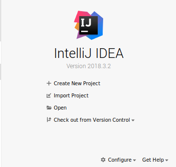
- Choose <dir>/zaproxy
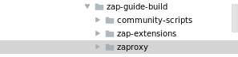
- Then choose `Create project from existing sources`
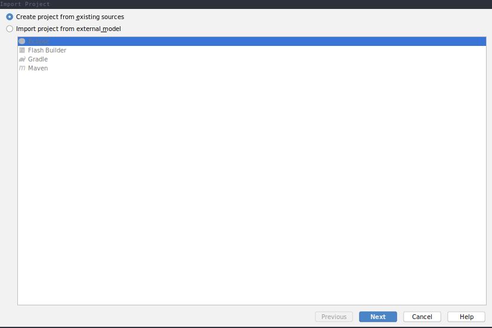
- The `Project location:` project location should be `<dir>/zaproxy`
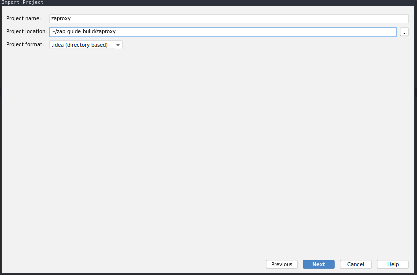
- At the following windows select `Mark All` and hit `Next`
- `Next`
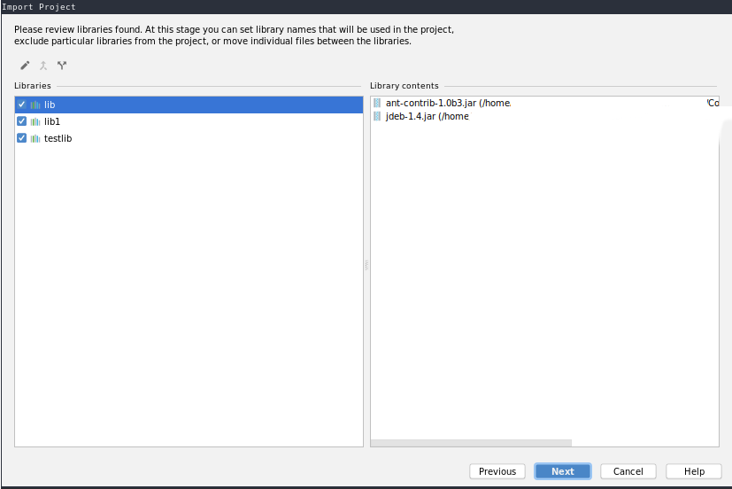
- `Next`
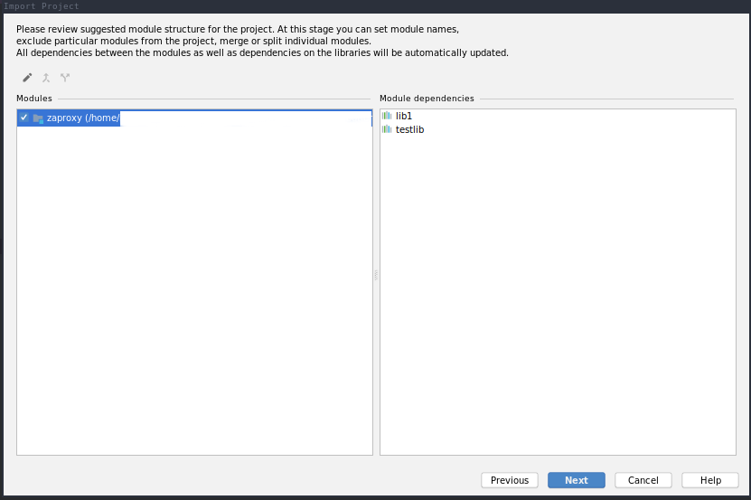
- Finally, hit `Finish`
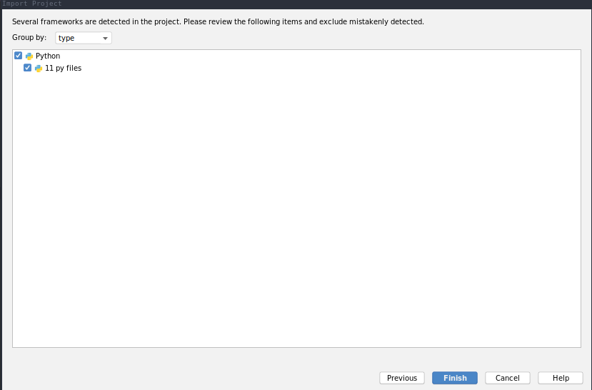
- After all you should came up with something like this:
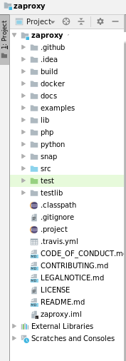
- In turn, Ant build.xml should be added using `Ant build` side panel
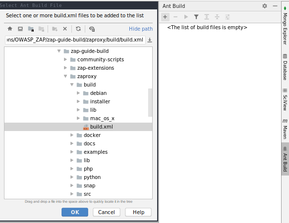
- Configure run and debug
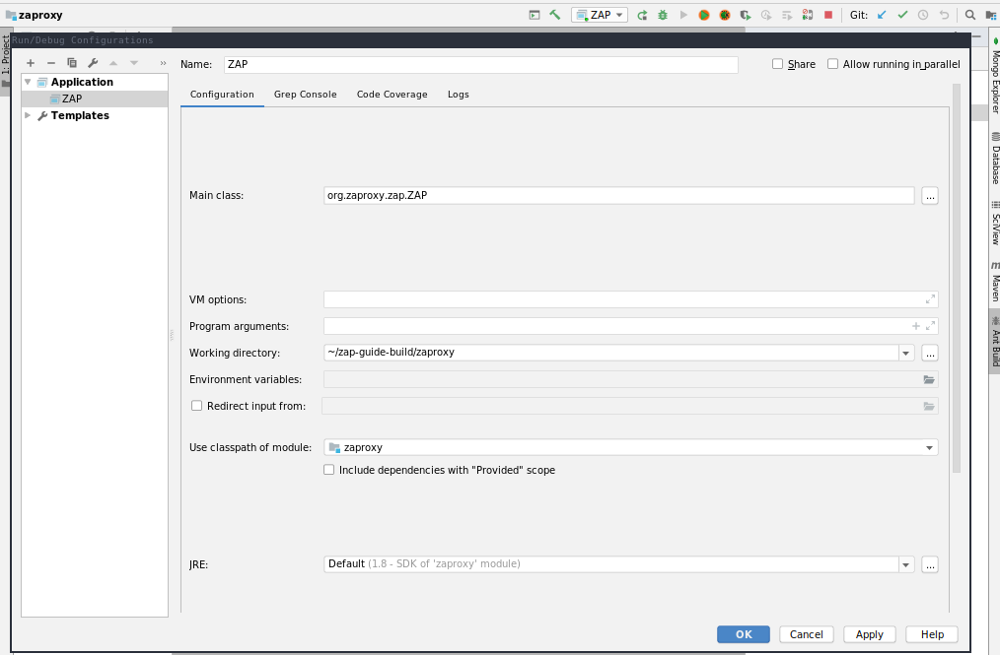
Build zap-extensions (gradle-build)
- Build zap
- Go to `File` -> `Project Structure' -> 'Modules` and hit `+` symbol
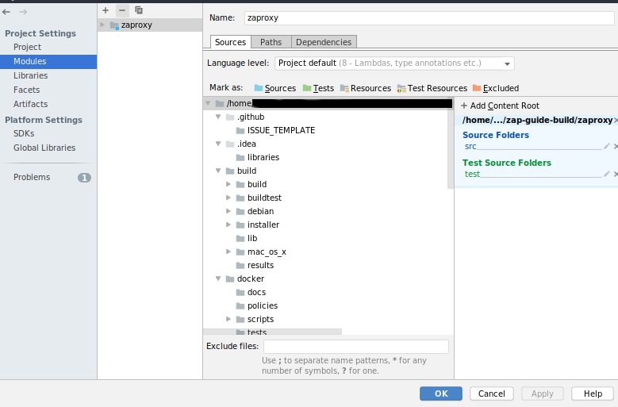
- Hit `Import module` and select `<dir>/zap-extensions`
- Then select `Import module from external model:` and use `gradle`
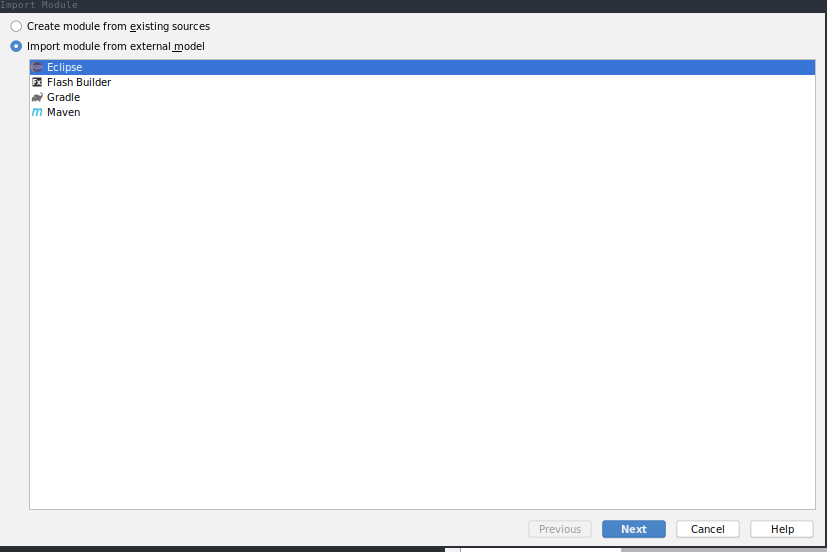
- In turn, select `Use default module wrapper (recommended)` and hit `Finish`
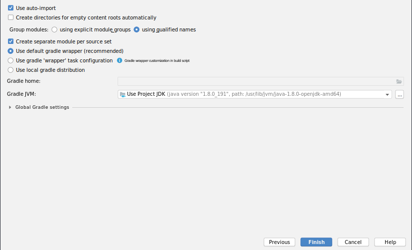
- Hit `OK` at `Project Structure` window. That may be take several minutes.
- After all should you be able to access `Gradle` side bar
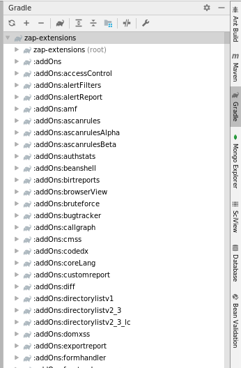
-
NOTE: In order to run/debug ZAP correctly, the `Use classpath of module:` at `Run/Debug Configurations` should always be selected at `zaproxy` module.
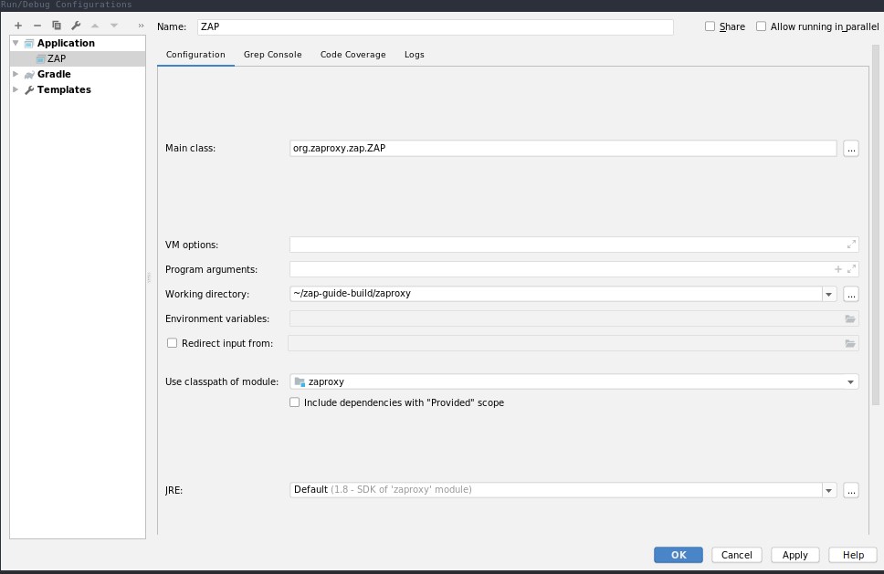
Comments
Comments powered by Disqus